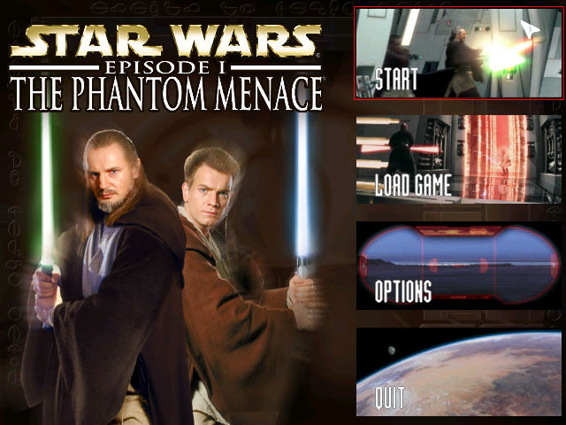
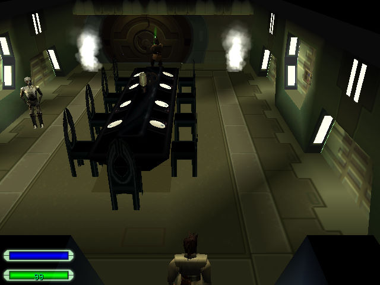

名稱：星際大戰首部曲／星際大戰前傳1：威脅潛伏／幻影威脅／魅影危機
(Star Wars: Episode I – The Phantom Menace，英文版)
簡介：Big Ape 1999年出品的動作冒險解謎遊戲，改編自同名電影，由LucasArts代理發行，
台灣由松崗代理進口，但並未中文化 [待補]。


保護：光碟
備註：非安裝移機者，需設定下列Registry（假設安裝目錄在C:\SW1TPM，光碟在D）：
[HKEY_LOCAL_MACHINE\SOFTWARE\LucasArts Entertainment Company LLC\The Phantom Menace\v1.0]
[HKEY_LOCAL_MACHINE\SOFTWARE\WOW6432Node\LucasArts Entertainment Company LLC\The Phantom Menace\v1.0]
"Executable"="C:\\SW1TPM\\WMAIN.EXE"
"Install Path"="C:\\SW1TPM"
"Source Path"="D:"
"CD Path"="D:"
"Analyze Path"="D:\\INSTALL\\SysCheck.exe"
"Source Dir"="D:\\"
"JoystickID"="1"
"InstallType"=dword:00000001
"SoundCard"="TRUE"
目錄名稱不可使用".\"的相對目錄。
備註：VirtualBox需搭配WineD3D，但貼圖仍有點問題，虛擬機建議使用VMware。
檔案：tpmupd11.rar = 1.1更新檔